Lecture 5: Data Visualization
PSTAT100: Data Science - Concepts and Analysis
![]()
May 22, 2026
🚁 Overview
Aims of the lecture
- Introduce the concept of data visualization and its importance in data analysis.
- Provide an overview of basic visualizations and when to use them.
- Introduce the
matplotlibandseabornlibraries for creating visualizations in Python. - Explore various style and formatting features including:
- Themes.
- Variable Formatting
- Facets.
📚 Required Libraries
In this lecture we will be using the following libraries:
Recap: Data Preparation
Data Preparation
- So far we have covered:
- Data acquisition and understanding.
- Data preparation.
- Tidy data.
- Quality assessment.
- Data cleaning.
Next Step: Exploration
- Perform exploratory data analysis (EDA).
- Learn data properties and relationships.

Exploratory Data Analysis (EDA)
🔍 Exploratory Data Analysis (EDA)
What is EDA?
Exploratory Data Analysis (EDA)
Exploratory Data Analysis (EDA) is the process of analyzing and visualizing data to understand its structure, identify patterns, and uncover insights.
EDA Steps (Topic of next lecture)
- Perform univariate analysis to understand the distribution of individual variables.
- Perform multivariate analysis to explore relationships between variables.
- Develop insights to inform modeling and deeper analysis.
Data Visualization
- A key component of EDA is data visualization.
- Python’s standard library does not include a full visualization system, so we use dedicated libraries such as:
matplotlib,seaborn,altair, andplotly.
Data Visualization
Data Visualization
Why Visualize Data?
- Improve interpretability of data.
- Identify patterns and relationships.
- Communicate findings effectively.
- Explore data in an interactive way.
Principles of Effective Data Visualization
- Novel
- Informative
- Efficient
- Aesthetic
Always ask yourself, what is this visualization for? What is it contributing?
Types of Visualization
Exploratory vs Presentation
- Exploratory visualizations
- Used during the data analysis process to explore and understand the data.
- Often created quickly and may not be polished or refined.
- Presentation visualizations
- Used to communicate findings to an audience.
- Typically more polished and refined, with a focus on clarity and aesthetics.
Static vs Interactive vs Animated
- Static visualizations: These are fixed images that do not allow for user interaction.
- Interactive visualizations: These allow users to interact with the data, such as zooming, filtering, and hovering for more information.
- Animated visualizations: These show changes in data over time or through different conditions.
Visualizations in Python
matplotlib
- The foundational visualization library in Python.
- Almost every other Python visualization library — including
seaborn— is built on top of it. - It is an imperative visualization library, meaning:
- Total control over all plot details.
- Often more verbose for common plots.
- Strong for fine-grained customization and publication-style figures.
seaborn
- Declarative statistical visualization library for Python.
- Similar to
ggplot2in R.
- Similar to
- It is a high-level statistical plotting API on top of
matplotlib, meaning:- You can create common statistical visualizations with much less code.
- It provides useful defaults for themes, color palettes, and grouped comparisons.
- Well suited for EDA and rapid iteration.
altair
- A declarative statistical visualization library for Python, based on Vega and Vega-Lite.
- It allows you to create interactive visualizations with a simple and intuitive syntax.
- Good for EDA, interactive documents, and reproducible chart specifications.
Plan for upcoming lectures
Lecture 5 (Today)
- Summary of standard visualizations and when to use them.
- Univariate, bivariate, multivariate.
- Categorical vs continuous variables.
- Outline standard basic (static) visualization production.
- Summarize foundations in
matplotlib. - Focus on
seabornfor EDA visualizations.
- Summarize foundations in
Lecture 6 (Thursday)
- Exploratory Data Analysis (EDA).
- Descriptive statistics.
- Complex
seabornvisualizations. - Interactive visualizations with
altair.
Basic Visualizations
Standard Visualizations
- We use different plots to visualize different types of data and relationships.
- Univariate and continuous variables:
- Box plots, Violin plots:
- Visualize the descriptive statistics of a continuous variable.
- Histograms, Density plots
- Visualize the distribution of a continuous variable.
- Box plots, Violin plots:
- Univariate and categorical variables:
- Bar plots, Count plots
- Visualize the count or proportion of categories in a categorical variable.
- Bar plots, Count plots
- Bivariate and continuous:
- Scatter plots
- Visualize the relationship between two continuous variables.
- Line plots
- Visualize the relationship between two continuous variables over time or another continuous dimension.
- Scatter plots
- Univariate and continuous variables:
Example Data: penguins
- We will be using the
penguinsdataset loaded from theseabornlibrary. - Contains measurements of penguins from three different species: Adelie, Chinstrap, and Gentoo.
(344, 7)| species | island | bill_length_mm | bill_depth_mm | flipper_length_mm | body_mass_g | sex | |
|---|---|---|---|---|---|---|---|
| 0 | Adelie | Torgersen | 39.1 | 18.7 | 181.0 | 3750.0 | Male |
| 1 | Adelie | Torgersen | 39.5 | 17.4 | 186.0 | 3800.0 | Female |
| 2 | Adelie | Torgersen | 40.3 | 18.0 | 195.0 | 3250.0 | Female |
| 3 | Adelie | Torgersen | NaN | NaN | NaN | NaN | NaN |
| 4 | Adelie | Torgersen | 36.7 | 19.3 | 193.0 | 3450.0 | Female |
Object-Oriented Interface
Pyplot vs Object-Oriented Interface
- Pyplot interface: A state-based interface that allows you to create plots using a simple, MATLAB-like syntax. It is suitable for quick and simple visualizations.
- Object-oriented interface: A more flexible and powerful interface that allows you to create complex and customized plots by working with figure and axes objects directly. It is recommended for more complex visualizations and when you need more control over the plot.
- We will primarily be using the object-oriented interface in this course.
Only covering the basics of matplotlib
- We will focus on plotting in
seabornandaltairin this course. - We only cover what we need to know in
matplotlib.
matplotlib Scatter Plots
Scatter Plots
- A scatter plot pairs two continuous variables to visualize their relationship.
- We produce scatter plots in
matplotlibas follows:- Create a figure and axis object using
plt.subplots(). - Call the appropriate plotting function on the axis object (e.g.
ax.scatter()). - Customize the plot using axis methods
ax.set(). - Display the plot using
plt.show().
- Create a figure and axis object using
fig, ax = plt.subplots(figsize=(8, 6)) # Create figure and axis objects
ax.scatter ( # Create scatter plot
"bill_length_mm", "bill_depth_mm",
data=penguins,
color="steelblue", # Set point color
alpha=0.95, # Set point transparency
s=7, # Set point size
marker="D" # Set point type
)
ax.set( # Set labels and title
xlabel="Bill Length (mm)",
ylabel="Bill Depth (mm)",
title="Penguin Bill Length vs Depth"
)
plt.show() # Show the plotmatplotlib Scatter Plots
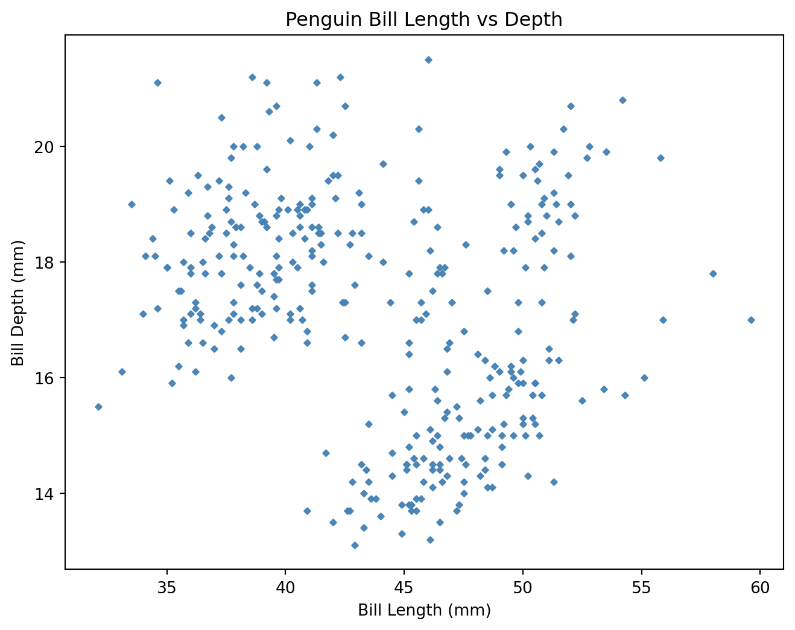
matplotlib)seaborn Scatter Plots
What makes seaborn so great?
- Uses the same underlying plotting functions as
matplotlibbut provides a higher-level interface for creating more complex and informative visualizations with less code. - Provides built-in themes and color palettes to make it easy to create attractive visualizations.
- Provides functions for visualizing statistical relationships, such as regression lines and confidence intervals.
Scatter Plots in seaborn
seaborn Scatter Plots
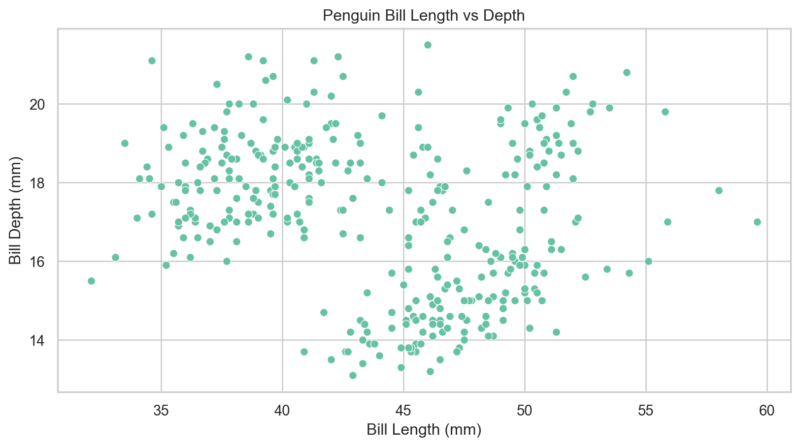
seaborn)Variable Based Formatting
Variable Based Formatting
- Often we would like to examine the influence of a third categorical variable on the relationship between two continuous variables.
- We can use variable-based formatting to color points by species in the penguins dataset.
Variable Based Formatting
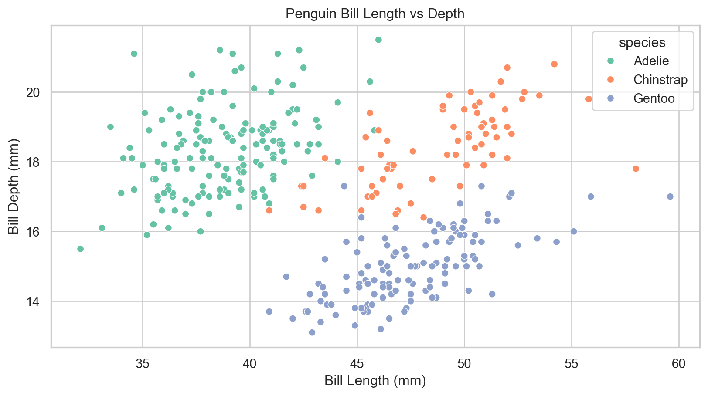
seaborn)Adding Best Fit Lines
What are best fit lines?
- A best fit line is a line that best fits the data points in a scatter plot, showing the overall trend of the relationship between the two variables.
- In
seaborn, we can produce a scatter plot with a best fit line using thelmplot()function.
For now, treat best fit lines as descriptive trend summaries; we will cover regression assumptions, estimation, and interpretation in detail in future weeks.
seaborn Regression Lines
g = sns.lmplot( # Scatter with regression line
x="bill_length_mm", y="bill_depth_mm",
data=penguins,
hue="species",
markers=["o", "s", "^"], # Set point types
line_kws={"linewidth": 2}, # Set line width
height=5, aspect=1.8 # Change figure size
)
g.set_axis_labels("Bill Length (mm)", "Bill Depth (mm)")
g.fig.subplots_adjust(top=0.9)
g.fig.suptitle("Penguin Bill Length vs Depth")
plt.show()Adding Best Fit Lines
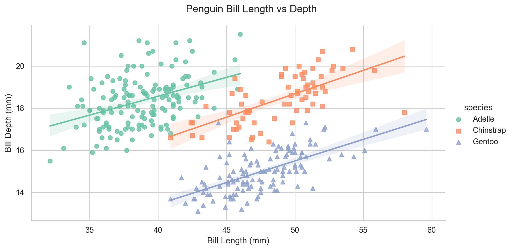
seaborn)Bar Plots
What are bar plots?
- A bar plot is a chart that presents categorical data with rectangular bars, where the length of each bar is proportional to the value it represents.
- They are often used to represent the count or proportion of categories in a categorical variable.
- Bar plots in
matplotlibare driven by the summary data frame we provide. In this case, we compute species counts in advance.
matplotlib Bar Plots
Bar Plots
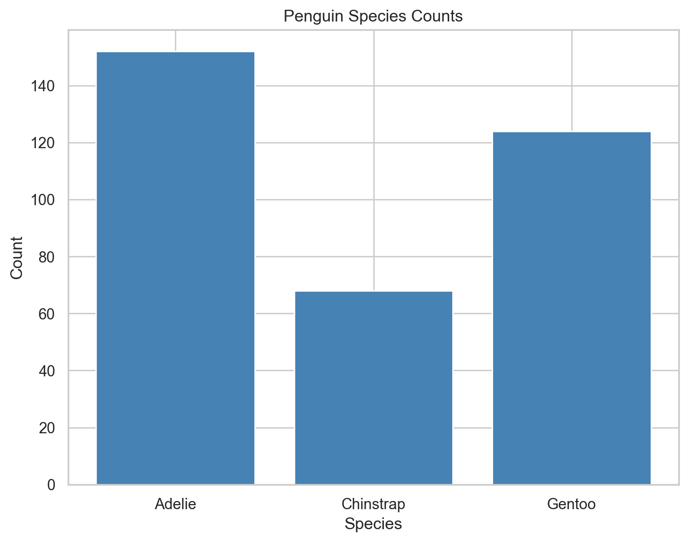
matplotlib)Count Plots
seaborn Count Plots
- Although
seabornhas an equivalentbarplotfunction, a more useful plot type in this case is acountplot. - This automatically computes the counts for each category and creates a bar plot without needing to pre-aggregate the data.
Count Plots
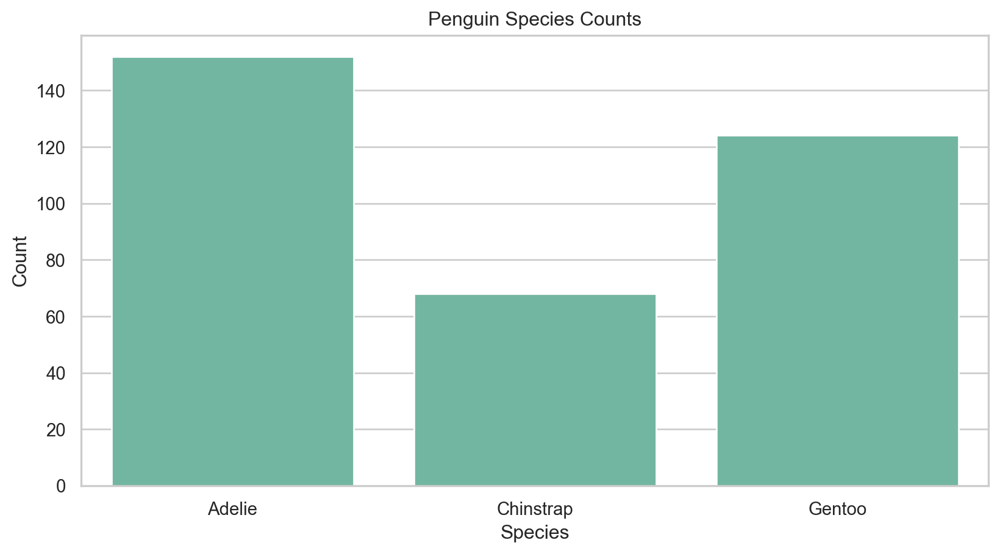
seaborn)Subgrouping and Variable Formatting
Subgrouping
- To examine relationships between multiple categorical variables, we can split each bar into subgroups based on a second categorical variable (e.g., species and island).
Subgrouping and Variable Formatting
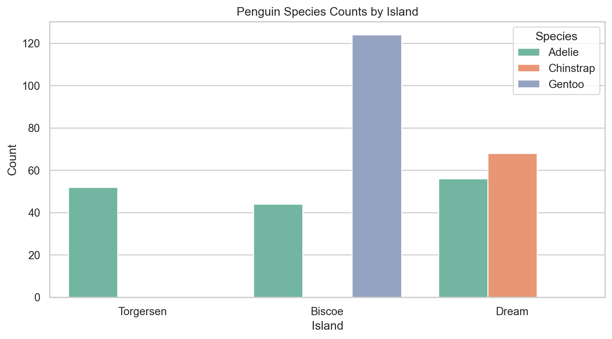
seaborn)Box Plots
What are box plots?
- A box plot (or box-and-whisker plot) is a standardized way of displaying the distribution of data based on a five-number summary: minimum, first quartile (Q1), median, third quartile (Q3), and maximum.
- It can also show outliers in the data.
- In
seaborn, we can produce a box plot using theboxplot()function.
Box Plots
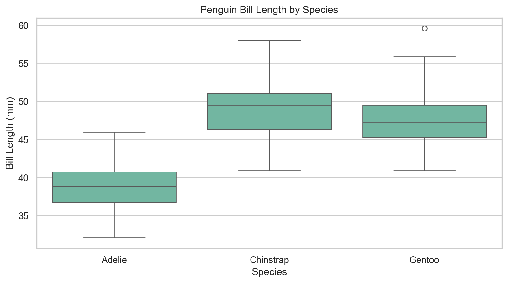
seaborn)Histograms
What are histograms?
- A histogram is a graphical representation of the distribution of a dataset, where the data is divided into bins and the frequency of data points in each bin is represented by the height of the bar.
- In
seaborn, we can produce a histogram using thehistplot()function.
Histograms
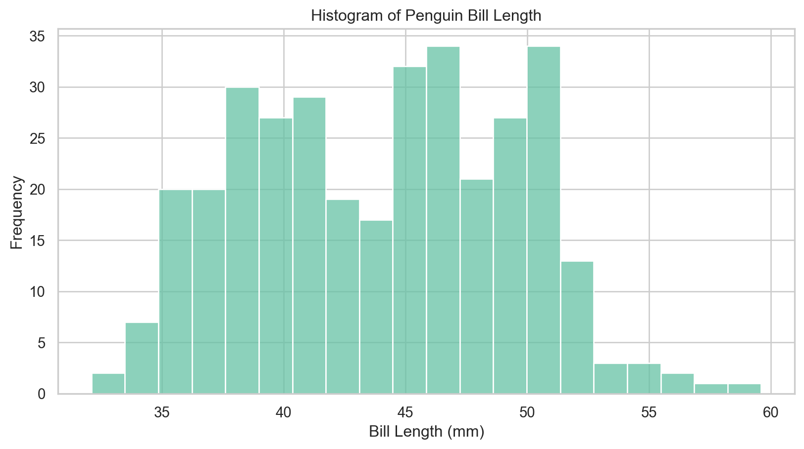
seaborn)Histograms with Variable Formatting and Kernel Density Estimates
Let’s start exploring what we can do!
- We know that the three species of penguins have different bill length distributions.
- Can we visualize this in a single plot?
- We can produce kernel density estimates (KDEs) to visualize the distribution of bill length for each species in a single plot.
seaborn Histograms with KDEs
- Histogram shape depends on binning choices, and KDE smoothness depends on bandwidth, so use these as exploratory summaries rather than definitive evidence.
ax = sns.histplot(
x="bill_length_mm",
data=penguins,
bins=20, # Set number of bins
kde=True, # Show kernel density estimate
hue="species", # Color by species
multiple="layer" # Overlay histograms
)
ax.set(xlabel="Bill Length (mm)", ylabel="Frequency", title="Histogram of Penguin Bill Length")
plt.show()Histograms with Variable Formatting and Kernel Density Estimates
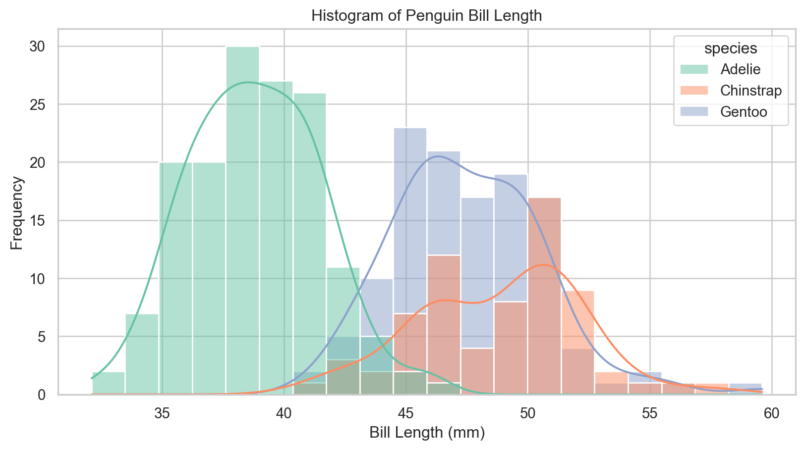
seaborn)Violin Plots
Fancy box plots?
- A violin plot is a method of plotting numeric data and can be understood as a combination of a box plot and a kernel density plot (a smoothed version of a histogram).
- It provides a visual summary of the distribution of the data, including its central tendency, variability, and shape.
- In
seaborn, we can produce a violin plot using theviolinplot()function.
Violin Plots
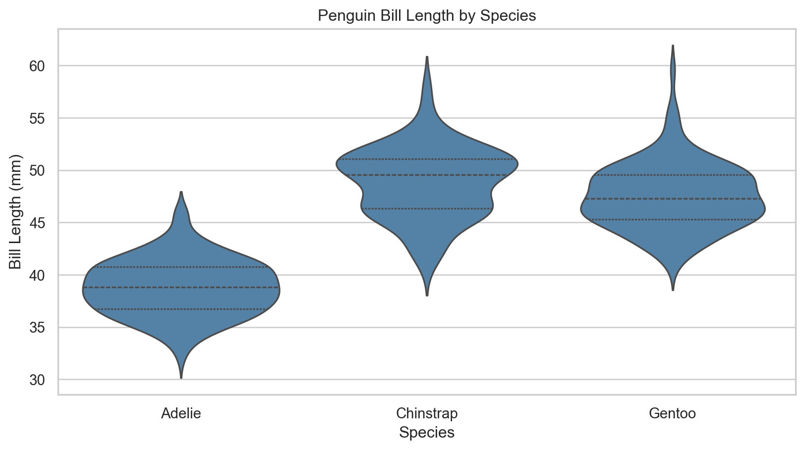
seaborn)Advanced Visualizations
Advanced Visualizations
Be creative!
- Remember, the goal of visualization is to communicate in a novel, aesthetic, and informative way.
- Don’t be afraid to experiment with different visualizations.
- Tweak and change things until they are clear!
Perhaps this boxplot is more informative?
ax = sns.boxplot(
x="bill_length_mm", y="species",
data=penguins,
color="lightsteelblue"
)
sns.stripplot(
x="bill_length_mm", y="species",
data=penguins,
color="black", # Use a single point color for readability
alpha=0.5, # Set point transparency
size=4, # Set point size
ax=ax
)
ax.set(
xlabel="Bill Length (mm)",
ylabel="Species",
title="Penguin Bill Length by Species"
)
plt.show()Advanced Visualizations
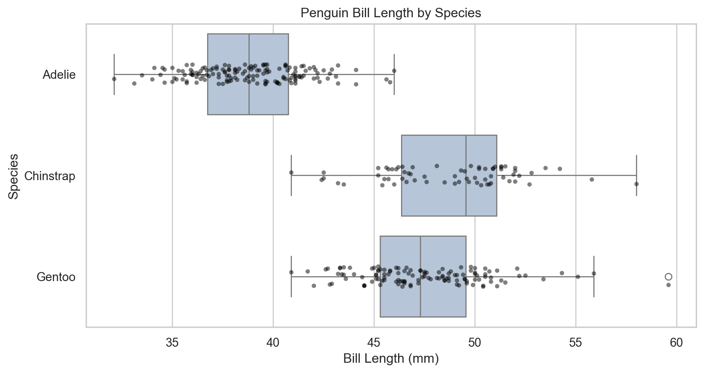
seaborn)Continuous Variable Formatting
We can also format using continuous variables!
- For our scatter plot suppose we wish to also incorporate the influence of body mass on bill length and depth.
- We can use the
sizeandsizesparameters to control the size of points based on body mass.
How about this scatter plot?
ax = sns.scatterplot(
x="bill_length_mm", y="bill_depth_mm",
data=penguins,
hue="species", # Color by species
style="species", # Shape by species
size="body_mass_g", # Scale by body mass
sizes=(20, 200), # Set size range
alpha=0.7 # Set point transparency
)
ax.set(xlabel="Bill Length (mm)", ylabel="Bill Depth (mm)", title="Penguin Bill Length vs Depth Scaled by Body Mass")
ax.legend(title="Species")
plt.show()Continuous Variable Formatting
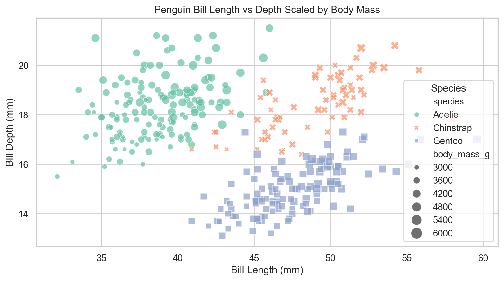
seaborn)Multiplotting
Multiplotting
What is multiplotting?
- Particularly for reports we often are interested in showing multiple related visualizations together.
- In
matplotlibwe can use thesubplots()function to create multiple plots in a single figure. - In
seabornwe can use theFacetGrid()function to create a grid of plots based on the values of one or more categorical variables.- This is where the improved efficiency of
seabornbecomes apparent as we can create complex multiplots with very little code.
- This is where the improved efficiency of
Multiplots with matplotlib
It’s still important to learn the syntax
- We first create a figure with multiple axes using
plt.subplots(). - We then loop through the axes and create a scatter plot for each species in the penguins dataset.
- Finally, we adjust the layout and display the plot.
Starting to get confusing! 😵💫
fig, axes = plt.subplots(nrows=1, ncols=3, figsize=(15, 5)) # Create figure and axes objects
species = penguins["species"].unique() # Get unique species
for ax, sp in zip(axes, species): # Loop through axes and species
subset = penguins[penguins["species"] == sp] # Subset data for each species
ax.scatter( # Create scatter plot
subset["bill_length_mm"], subset["bill_depth_mm"],
color="steelblue",
alpha=0.95,
s=7,
marker="D"
)
ax.set_title(sp)
ax.set_xlabel("Bill Length (mm)")
ax.set_ylabel("Bill Depth (mm)")
plt.tight_layout() # Adjust layout
plt.show() Multiplots with matplotlib

matplotlib)Multiplots with seaborn
So much easier! 😎
- We can create the same multiplot using
seaborn’sFacetGrid()function with much less code. - This function allows us to create a grid of plots based on the values of one or more categorical variables, making it easy to compare relationships across different groups.
- The
map()method is used to apply a plotting function (e.g.,sns.scatterplot) to each subset of the data defined by the grid.
Facets with seaborn
g = sns.FacetGrid(
penguins,
col="species",
height=4,
aspect=1) # Create facet grid
g.map(
sns.scatterplot,
"bill_length_mm", "bill_depth_mm",
color="steelblue",
alpha=0.95,
s=7,
marker="D") # Map scatter plot to each facet
g.set_axis_labels(
"Bill Length (mm)",
"Bill Depth (mm)"
) # Set axis labels
g.fig.subplots_adjust(top=0.8) # Adjust subplot spacing
g.fig.suptitle("Penguin Bill Length vs Depth by Species") # Set overall title
plt.show() # Show the plotMultiplots with seaborn
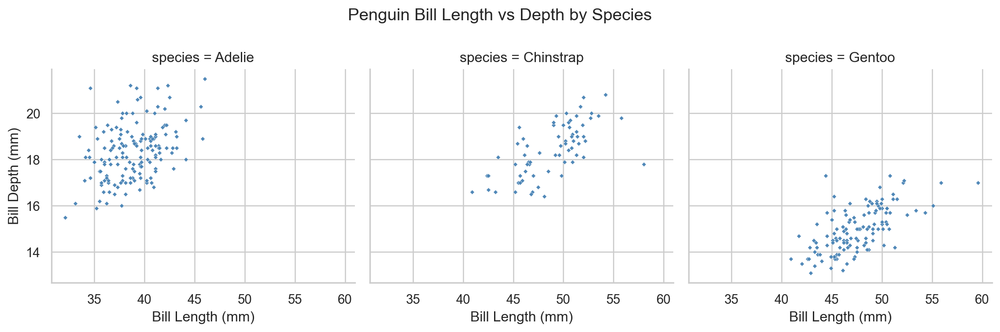
seaborn)Conclusion
✅ What we covered
- Standard visualizations and when to use them.
- Basic visualization production in
matplotlibandseaborn. - Style and formatting features including themes, variable formatting, and facets.
- The importance of creativity and experimentation in data visualization.
- Facets.
📅 What’s next?
- Exploratory Data Analysis (EDA).
- Descriptive statistics.
- Complex
seabornvisualizations. - Interactive visualizations with
altair.